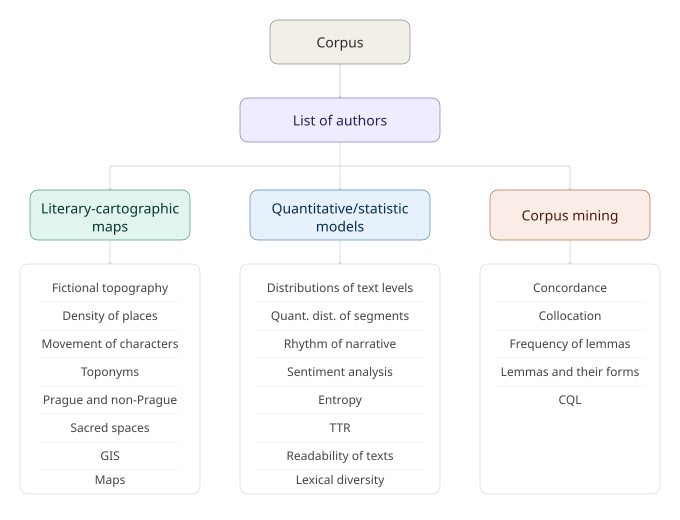
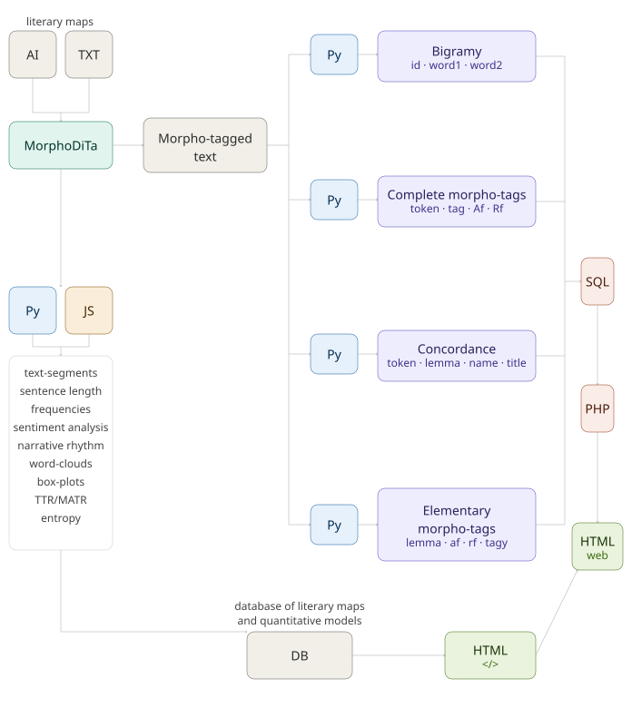
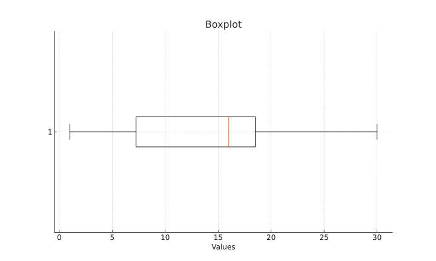

Informations
Structure of Corpus
Click in the model area to enlarge it.
{kind=link}

Structure of Data Implementation into Databases
Click in the model area to enlarge it.
{kind=link}

Fictional Topography Models – Character Wandering Network Models - Place Density - Character Networks
The models use vectorised maps that are conceived in Adobe Illustrator. The purpose of these maps is to provide a basic topographic fundanet into which layers of fictional topographies, network models and site density models are fed. Caracter Wandering Network Models of character journeys show the connections between the places where a character or characters move. You can click on Network Model Type Visualization to see the network model types. Place desnity map shows each location according to its frequency load in a given text. The size of the circle is calculated as 2πr, where r is the relative frequency of the toponym. Character Networks illustrate the relationships and interactions between different characters within the narrative space.
Number of Residents and Houses in Prague and Surrounding Districts in 1869-1950
Prague's topography hardly changed during the 19th century, which cannot be said about the population and especially the new houses that grew up in the districts that were built outside the original Prague walls during the 19th century. At the turn of the century, the so-called Prague Redevelopment took place and in 1922 the so-called Greater Prague was declared.
Frequency of Toponyms and Locations – Prague and Non-Prague Locations – Sacred Spaces – GIS
The toponym frequency graphs are obtained by filtering toponyms from a special TXT file that is manually extracted from the texts. Automatic detection is also used using the so-called named entity recognition method (for Czech names, see Czech Named Entity Corpus 1.0). The frequencies of different ways of naming a toponym are grouped under one name; for example, in Arbes's Saint Xavier we find the following ways of naming the St. Nicholas Cathedral in the Lesser Town: Mikuláš, Mikuláš Cathedral, Malostranská Cathedral. By sites we generally mean Prague and non-Prague sites. Here, we distinguish whether the action takes place in Prague (in this case, regardless of the specific Prague topographical designation) or outside Prague. This criterion varies, of course, depending on the urban development of the city, especially since the end of the 19th century. In an interpretation that takes this aspect into account, it is therefore important to consider individual sites in relation to the historical changes in Prague's topography. For example, Smíchov in Arbes's novels represents a space beyond the borders of Prague. Sacred places are categorized as: temple, ancient temple, cathedral, monastery, church, parts of church, church interior, rectory and cemetery. These categories are selected according to entries from the Thesaurus of the Czech Language. GIS maps associate fictional topographic locations with real places according to coordinates (longitude, latitude). Places that still exist are distinguished from places that have disappeared.
Text Annotation
All texts in the corpus are annotated not only morphologically using the Morphodita tool, but also with special tags to mark individual text segments and locations. An overview of these tags is provided in the table below.
| Text Segment | Tag |
|---|---|
| direct speech (beginning) | P |
| direct speech (end) | R |
| direct speech as internal monologue (beginning) | CM_X |
| direct speech as internal monologue (end) | CM_Y |
| personal narrator (beginning) | VP_X |
| personal narrator (end) | VP_Y |
| narrator-character (beginning), so-called homodiegetic | VO_X |
| narrator-character (end), so-called homodiegetic | VO_Y |
| supra-personal narrator (beginning), so-called heterodiegetic | VN_X |
| supra-personal narrator (end), so-called heterodiegetic | VN_Y |
| rhetorical narrator (beginning) | R_X |
| rhetorical narrator (end) | R_Y |
| first-degree embedded narrative (beginning), so-called intradiegetic | V1_X |
| first-degree embedded narrative (end), so-called intradiegetic | V1_Y |
| beginning of direct speech in first-degree embedded narrative | P_1 |
| end of direct speech in first-degree embedded narrative | R_1 |
| second-degree embedded narrative (beginning), so-called intradiegetic | V2_X |
| second-degree embedded narrative (end), so-called intradiegetic | V2_Y |
| beginning of direct speech in second-degree embedded narrative | P_2 |
| end of direct speech in second-degree embedded narrative | R_2 |
| embedded text - letter, diary, ... (beginning) | D_X |
| embedded text - letter, diary, ... (end) | D_Y |
| direct speech in embedded text (beginning) | DP |
| direct speech in embedded text (end) | DR |
| unrealized direct speech (beginning) | NM_X |
| unrealized direct speech (end) | NM_Y |
| Location | Tag |
|---|---|
| location Prague (start) | PRAG_X |
| location Prague (end) | PRAG_Y |
| location Smíchov (beginning) | SMICH_X |
| location Smíchov (end) | SMICH_Y |
| location Stone quarries (beginning) | KL_X |
| location Stone quarries (end) | KL_Y |
| location Spain (beginning) | SPAIN_X |
| location Spain (end) | SPAIN_Y |
| location Krkonoše Mountains (beginning) | KRKO_X |
| location Krkonoše Mountains (end) | KRKO_Y |
| location Vienna (beginning) | WIEN_X |
| location Vienna (end) | WIEN_Y |
| Šumava Mountains (beginning) | SUMAV_X |
| Šumava Mountains (end) | SUMAV_Y |
| Setting: between Prague and Plzeň (beginning) | PRA-PL_X |
| Setting: between Prague and Plzeň (end) | PRA-PL_Y |
Statistics
This section contains information regarding the text segments that were analyzed. They are listed on the y axis of the Sentence Lengths chart, which shows the average sentence lengths of single-character segments as a function of the specific text, as well as across the entire author coprus (lower area of the chart). The second graph contains boxplots (box plots) that show the dispersion of text by sentence lengths. A boxplot is a representation of the values between the first (Q25) and third quartiles (Q75), i.e., the variance between 25% - 75% of the values. Inside the boxplot is a meridian (Q50) showing the mean value(s) in the set of numerical sequences. Outliers are also part of the plots.
Example:
1, 2, 5 ,8, 15, 16, 16, 17, 18, 20, 25, 30
An ordered numeric series of measured/acquired values (in our case, this would be the individual sentence lengths in the text) has a size of 12 items. Q25 = 3, Q50 = 6, Q75 = 9. The boxplot will include the area between the intervals Q25 and Q75, which means the numbers: 5 , 8, 15, 16, 17, 18, where Q50 = 16. In an ordered set of values, the boxplot is the expression of those values that lie in this interval. The meridian is the mean, not the arithmetic mean, which in this case is 14.4. The resulting boxplot shows a higher concentration of values in the 3rd quartile, i.e. in the range between 50% - 75%:

Entropy expresses the so-called degree of uncertainty of the system or the degree of its disorder. Entropy is directly related to the probability of occurrence of elements in the system. in other words, the higher the probability of the elements of the system, the lower the degree of its uncertainty and vice versa. In information theory, the following formula so called Sahnnon entropy is used to calculate entropy:
$$H = - \sum_{i=1}^{n} p_i \log_2(p_i)$$
The probability of the element p(i) is given by: $$P(i) = \frac{\text{Af(i)}}{\text{N}}$$
Af(i) is the absolute frequency of a given element (e.g., word) and N is the size of the text (e.g., calculated per word count). The relationship between probability, entropy, frequency and semantics of a linguistic feature can be expressed as follows:
$$Z^{(-\inf, +\text{sem})}_{freq+} = \text{low entropy}$$ $$Z^{(+\inf, -\text{sem})}_{freq-} = \text{high entropy}$$
inf = information saturationt
sem = semantics
freq = freqency
The more frequent the feature, the lower its information saturation and the lower the entropy value and vice versa. If the entropy is 0, it means that the system is completely ordered, i.e. 100% predictable. These three short versions of random texts may serve as an example (texts was generated by Chat GPT 4o):
House house house house house house house house house house house house house.
House cat house dog house tree house car house bird house flower house sky house.
The house on the hill stood tall, surrounded by trees and flowers. A curious cat wandered near the fence, while a dog barked in the distance. The sky turned orange as the sun set, casting shadows over the car parked in the driveway. Birds chirped melodiously, filling the air with life, and the gentle breeze carried the scent of blooming roses.
Lexical diversity is represented here as the relationship between the number of words occurring once in a given work (hapax legomena) and the size of the text (the number of all words in the text). Texts below the linear regression axis are characterized by higher lexical diversity.
To calculate lexical diversity and display it in a graph with linear regression, at least two paired values (x, y) are required (This is the reason why such graphs are missing for some authors, as their corpus currently contains only a single work.), where x represents unique words and y represents all words. The calculation uses the formula:
$$y = mx + b$$
where m is the slope (gradient of the line) and b is the offset (y-intercept of the line). The slope is calculated as:
$$m = (y2 - y1) / (x2 - x1)$$
For the values x1, y1 = 5, 23 and x2, y2 = 3, 58, the slope is -17.5. The offset is calculated as:
$$b = y1 - m * x1$$
With the given values, the offset is equal to 110.5.
The readability of the text is determined by:
Flesch Reading Ease Score Table
| Score Range | Readability Level | Education Level Needed |
|---|---|---|
| 90–100 | Very easy to read | 5th grade (10-11 years old) |
| 80–89 | Easy to read | 6th grade |
| 70–79 | Fairly easy to read | 7th grade |
| 60–69 | Standard | 8th–9th grade |
| 50–59 | Fairly difficult | High school |
| 30–49 | Difficult | College level |
| 0–29 | Very difficult to read | College graduate level |
Flesch-Kincaid Grade Level Table
| Score Range | Grade Level | Description |
|---|---|---|
| 0–1 | Kindergarten–1st grade | Very simple sentences and vocabulary |
| 2–3 | 2nd–3rd grade | Easy to read; simple ideas |
| 4–6 | 4th–6th grade | Fairly easy; typical for children's books |
| 7–8 | 7th–8th grade | Standard for young teens and magazines |
| 9–10 | 9th–10th grade | Fairly difficult; high school level |
| 11–12 | 11th–12th grade | Difficult; requires advanced reading |
| 13–16 | College level | Very difficult; typical for academic texts |
| 17+ | Postgraduate level | Extremely difficult, research-focused |
Gunning Fog Index Table
| Score Range | Readability Level | Education Level Needed |
|---|---|---|
| 6 and lower | Very easy to read | Elementary school |
| 7–8 | Easy to read | Junior high school |
| 9–12 | Standard | High school |
| 13–16 | Difficult | College |
| 17 and higher | Very difficult | Graduate school |
Sentiment Analysis – Cluster Sentiment – Word Clouds – Cluster Sentiment Graph Line – MDS
Sentiment analysis is carried out on the basis of the list of lemmas made available by Kateřina Veselovská and Ondřej Bojar within the project SubLex 1.0. In the course of the Czech prose corpus project, we are currently trying to work with the lexicon excerpted from the Thesaurus of the Czech Language, specifically with entries containing lexemes for expressing emotions. Their provisional listing is available in Open Data. Word cluster models are the set of the most frequent autosemantics in a given work. The size of a word in the model corresponds to its frequency load. In particular, synsemantics or other words are removed during the analysis. Their list is in the Open Data section. Clustering models are used to track the main motifs. The Clusters of Sentiment section allows you to search for thematic clusters of emotions in each prose of the author corpus. Clusters are defined according to the "Thesaurus of the Czech Language" by Aleš Klégr et al.
The structure of JSON file containing dictionary for thematic sentiment analysis:
{"NAME OF EMOTIONAL" : [emotional lemmas]}
Cluster Sentiment Graph Line display the comparable frequency of the individual clusters of emotions in the texts. The graph is based on the frequency of the lemmas in the text. The MDS (Multidimensional Scaling) model is a two-dimensional representation of the clusters of emotions in the text. The graph shows the distances between texts with regard to their sentiment cluster distribution. The closer the texts are to each other, the more similar the frequency distribution of their sentiment clusters is.
The cumulative frequency shows the occurrence of lemmas with positive and negative emotionality in the text. The curve only counts these lemmas, i.e. its length (x-axis) depends on the size of the dictionary containing such lemmas, i.e. 5685 lemmas, not on the length of the text. The y-axis shows the cumulative frequency of these lemmas in the text. The curve thus shows how many of these lemmas are found in the text. The steeper the curve, the more frequent the occurrence of these lemmas in the text. If the curve is flat, it means that these lemmas do not occur in the text at all or only very rarely. However, this is not the case in the corpus.
Search Word Types by Simple Tag
The search for word types is performed in a database of morphologically tagged texts using the MorhoDita tool developed by Milan and Jana Straka. After entering a collapsed tag (the first position in a 15-position tag) for a particular word species, the corresponding lemmas are searched, sorted in descending order of frequency. The lemmatized and morphologically tagged text files are accessible in Open Data.
CQL
CQL is a corpus query language. For more informations click here .
Search examples:
[lemma="something"] (searches for lemmas containing something)
[tag="something"] (searches for tags containing something)
[word="something"] (searches for words containing something)
[word="*ti"] (searches for words ending in -ti)
[lemma="*ti"] (searches for lemmas ending in -ti)
[word="something"] OR [lemma="*ti"] OR [tag="something"]
Concordances – Collocations – Words in Context
Concordance search (5 positions on the left, 5 positions on the right of the searched word including punctuation) is performed in the database of lemmatized texts. Within each author sub-corpus, concordances can be searched with respect to the respective work and also in the whole author corpus. It is also possible to search the entire author corpora and the corpus of all authors. Collocations of right context are counting by associative measures: logDice, MI-score, T-score. Word in Context shows the context of two words that are no more than 3 positions to the right of each other.
Lemmas – Frequency Dictionaries – Tokens
The search for lemmas and individual word types is carried out in the database of lemmatized texts. After entering the desired lemma in the appropriate search field, basic information about the lemma is displayed, i.e. absolute and relative frequencies, as well as word forms (unique tokens) that occur in the text. The output includes a complete frequency list of all lemmas downloadable in pdf for the respective text.
Time Line of Text Segments
The graph shows the frequency of each text segment over time. The value on the y-axis corresponds to the highest frequency of a given segment in a given year measured on the texts in the corpus. The graph thus shows the de facto peak values. For example, if the following values are measured in 1875 in the rethorical-narrator framework: 0.00, 930945.47, 826416.78, 719223.77, 321243.52, then the chart plots a peak value is 930945.47.
Stylometry
In the section for searching the entire corpus, stylometric models are available: a dendrogram and a network graph, which show the degree of affinity between texts in the corpus.
Open Data Format
Recommendations to load the table correctly in Python use this command: pd.read_csv("table_dat.csv").drop(columns=["Unnamed: 0"])
| Name | Criteria |
|---|---|
| Type of data set | CSV |
| Update periodicity | irregularity |
| Attribute | Description | Data Type |
|---|---|---|
| author | authors names | object |
| year_birth | number of author birth date | int64 |
| year_dead | number of author dead date | int64 |
| title | names of titles | object |
| year_published | year of first publication | int64 |
| num_sentences | number of sentences | int64 |
| num_token | number of tokens | int64 |
| num_lemmas | number of lemmas | int64 |
| longest_sentence | longest sentence | int64 |
| longest_word | longest word | int64 |
| Name | Criteria |
|---|---|
| Does not contain the author's work | NO |
| Does not contain the original database | YEAS |
| Not protected by the special rights of the database founder | NO |
| Does not contain personal data | YEAS |
Text Research
The Text Research item is part of every author's menu. It is an RAG agent searches all texts contained in the corpus and answers basic questions, such as what characters appear in a given prose work, what their names are, how the characters interact with each other, how the prose ends, or what the emotionality of a particular character's speech is, etc. The agent is built in the N8N environment and connected to the Pinecone vector database.
Here you can finde the table of authors and their novels
| 19. CENTURY | |||
| AUTHOR | TITLE | AUTHOR | TITLE |
| Jakub Arbes | Medea s bezvýrazným okem | Jakub Arbes | Nalezenec |
| Jakub Arbes | Anna a Marie | Jakub Arbes | Kamarádi |
| Jakub Arbes | Blíženci | Jakub Arbes | Rodinné drama |
| Jakub Arbes | Zpuchřelá nitka | Jakub Arbes | V staré pražské krčmě |
| Jakub Arbes | Duhový bod nad hlavou | Jakub Arbes | Odumírající drahokam |
| Jakub Arbes | Trilobit | Jakub Arbes | Lilie v úpalu slunečním |
| Jakub Arbes | Duhokřídlá Psyché | Jakub Arbes | Připij si, bratříčku! |
| Jakub Arbes | V růžovém rozmaru | Jakub Arbes | Poslední dnové lidstva |
| Jakub Arbes | Noc na hřbitově | Jakub Arbes | Svatý Václav |
| Jakub Arbes | Vymírající hřbitov | Jakub Arbes | Samovrah |
| Jakub Arbes | Moderní Magdaléna | Jakub Arbes | Anděl míru III. |
| Jakub Arbes | Anděl míru IV. | Jakub Arbes | Agitátor |
| Jakub Arbes | Elegie o černých očích | Jakub Arbes | Zborcené harfy tón |
| Jakub Arbes | Anděl míru I. | Jakub Arbes | Anděl míru II. |
| Jakub Arbes | Ďábel na skřipci | Jakub Arbes | Dobrodružství ve výsadní hospodě |
| Jakub Arbes | Svatý Xaverius | Jakub Arbes | Sivooký démon |
| Jakub Arbes | Zbožný Tomáš | Jakub Arbes | Zázračná madona |
| Jakub Arbes | Penězokaz | Jakub Arbes | Sběhlé švícko |
| Jakub Arbes | Ukřižovaná | Jakub Arbes | Newtonův mozek |
| Jakub Arbes | Sladký hřích | Jakub Arbes | Akrobati |
| Jakub Arbes | Kandidáti existence | Jakub Arbes | Poslední škamna |
| Jakub Arbes | Zbožňovatel kněžny Esterházy | Jakub Arbes | Etiopská lilie |
| Jakub Arbes | Šílený Job | Jakub Arbes | Můj přítel vrah |
| Jakub Arbes | Advokát chuďasů | Jakub Arbes | Divotvorná krev |
| Jakub Arbes | Adamité | Jakub Arbes | Moderní upíři |
| Jakub Arbes | Štrajchpudlíci | Jakub Arbes | Mesiáš I |
| Jakub Arbes | Mesiáš II | Jakub Arbes | Démantová garnitura |
| Jakub Arbes | Bílé svatbení šaty | Jakub Arbes | Jedna z těch, které mě zajímaly |
| Jakub Arbes | Lampičky | Jakub Arbes | Před domem smutku |
| Jakub Arbes | Aspoň se pousměj | Jakub Arbes | Dva barikádníci |
| Jakub Arbes | První noc u mrtvoly | Jakub Arbes | Il divino bohemo |
| Jakub Arbes | Lotr Gólo | Karel Hynek Mácha | Viasil Viasilovič |
| Karel Hynek Mácha | Klášter Sázavský | Karel Hynek Mácha | Sen |
| Karel Hynek Mácha | Karlův tejn | Karel Hynek Mácha | Svět smyslný |
| Karel Hynek Mácha | Poutník | Karel Hynek Mácha | Přísaha |
| Karel Hynek Mácha | Márinka | Karel Hynek Mácha | Křivoklad |
| Karel Hynek Mácha | Večer na Bezdězu | Karel Hynek Mácha | Krkonošská pouť |
| Karel Hynek Mácha | Svět zašlý | Karel Hynek Mácha | Návrat |
| Karel Hynek Mácha | Cikáni | Karel Hynek Mácha | Valdice |
| Jan Neruda | Týden v tichém domě | Jan Neruda | Pan Ryšánek a pan Schlegl |
| Jan Neruda | Přivedla žebráka na mizinu | Jan Neruda | O měkkém srdci paní Rusky |
| Jan Neruda | Večerní šplechty | Jan Neruda | Doktor Kazisvět |
| Jan Neruda | Hastrman | Jan Neruda | Jak si nakouřil pan Vorel pěnovku |
| Jan Neruda | U Tří lilií | Jan Neruda | Svatováclavská mše |
| Jan Neruda | Psáno o letošních dušičkách | Jan Neruda | Jak to přišlo… |
| Jan Neruda | Figurky | Josef Jiří Kolár | Pekla zplozenci |
| Julius Zeyer | Jan Maria Plojhar | Julius Zeyer | Legenda pražská |
| Julius Zeyer | Legenda toledská | Julius Zeyer | Legenda slovenská |
| Karolina Světlá | Černý Petříček | Karolina Světlá | Zvonečková královna |
| Karolina Světlá | První Češka | Karolina Světlá | Mladá paní Zapletalová |
| Karolina Světlá | Škapulíř | Karolina Světlá | Na košatkách |
| Svatopluk Čech | Nový epochální výlet pana Broučka tentokráte do XV. století | Svatopluk Čech | Pravý výlet pana Broučka do Měsíce |
| Zikmund Winter | Mistr Kampanus | Alois Jirásek | Filozofská historie |
| Alois Jirásek | Psohlavci | Alois Jirásek | F. L. Věk I |
| Alois Jirásek | F. L. Věk II | Alois Jirásek | F. L. Věk III |
| Alois Jirásek | F. L. Věk IV | Alois Jirásek | F. L. Věk V |
| Alois Jirásek | Temno | Vilém Mrštík | Santa Lucia |
| Ignát Herrmann | Historie o doktoru Faustovi | Ignát Herrmann | Zamrzá! |
| Ignát Herrmann | Spiritista | Ignát Herrmann | Dvě těžké chvíle ze života páně Klokočova |
| Ignát Herrmann | Pan Alojs | Ignát Herrmann | To se tak nebere! |
| Ignát Herrmann | "Ztracený ráj" páně Tetřevův | Ignát Herrmann | Proč pan Tadeáš Bezinka chodí oholen a ostříhán |
| Ignát Herrmann | První výdělek | Ignát Herrmann | Kterak pan Vilibald Vonásek dobyl svobody |
| Ignát Herrmann | Poslední sázka | Ignát Herrmann | Smlouva pánů Škabrouta a Rysa – a její zánik |
| Ignát Herrmann | Hvězdáři | Ignát Herrmann | Malíř a malíř! |
| Ignát Herrmann | Dobrý muž Koňura | Ignát Herrmann | Náš "Mikoláš" |
| Ignát Herrmann | Tajný společník páně Kobrčův | Ignát Herrmann | U snědeného krámu I |
| Ignát Herrmann | U snědeného krámu II | Ignát Herrmann | U snědeného krámu III |
| Ignát Herrmann | U snědeného krámu IV | Ignát Herrmann | Otec Kondelík a ženich Vejvara |
| Ignát Herrmann | Tchán Kondelík a ženich Vejvara | Ignát Herrmann | Příběh dušičkový |
| 20. CENTURY | |||
| AUTHOR | TITLE | ||
| Karel Matěj Čapek-Chod | Kašpar Lén mstitel | ||
| Antonín Sova | Ivův román | ||
| Jaroslav Hašek | Osudy dobrého vojáka Švejka za světové války I | ||
| Jaroslav Hašek | Osudy dobrého vojáka Švejka za světové války II | ||
| Gustav Meyrink | Golem | ||
| Gustav Meyrink | Zelená tvář | ||
| Gustav Meyrink | Neviditelná Praha | ||
| Gustav Meyrink | Zelená tvář | ||
| Gustav Meyrink | Valpuržina noc | ||
| Gustav Meyrink | Bílý dominikán | ||
| Gustav Meyrink | Anděl západního okna | ||
| Gustav Meyrink | Anděl západního okna | ||
| Gustav Meyrink | Pražská vizitka | ||
| Gustav Meyrink | Pražská vizitka | ||
| Franz Kafka | Proces | ||
| 21. CENTURY | |||
| AUTHOR | TITLE | ||
| Michal Ajvaz | Vražda v hotelu Intercontinental | ||
| Michal Ajvaz | Návrat starého varana | ||
| Michal Ajvaz | Druhé město | ||
| Michal Ajvaz | Luxemburská zahrada | ||
| Daniela Hodrová | Poobojí | ||
| Daniela Hodrová | Kukly | ||
| Daniela Hodrová | Théta | ||
| Daniela Hodrová | Město vidím | ||
| Daniela Hodrová | Perunův den | ||
| Daniela Hodrová | Točité věty | ||
| Miloš Urban | Sedmikostelí | ||
| Miloš Urban | Poslední tečka za rukopisy | ||
| Miloš Urban | Hastrman I | ||
| Miloš Urban | Hastrman II | ||
| Miloš Urban | Paměti poslance parlamentu | ||
| Miloš Urban | Stín katedrály | ||
| Miloš Urban | Michaela | ||
| Miloš Urban | Santiniho jazyk | ||
| Miloš Urban | Pole a palisáda | ||
| Miloš Urban | Lord Mord | ||
| Miloš Urban | Boletus Arcanus | ||
| Miloš Urban | Praga Piccola | ||
| Miloš Urban | Urbo Kune | ||
| Miloš Urban | Závěrka aneb ztížená možnost happy-endu | ||
| Miloš Urban | Továrna na maso | ||
| Petr Stančík | Pérák | ||
| Petr Stančík | Mlýn na mumie | ||
How to quote
Změlík, Richard: 'Literary Cartographic and Quantitative Models of Czech Novels from the 19th to 21st Century'. Faculty of Arts, Palacký University in Olomouc, Olomouc. Available from WWW: https://korpusprozy.com/ [quoted: day, month, year]